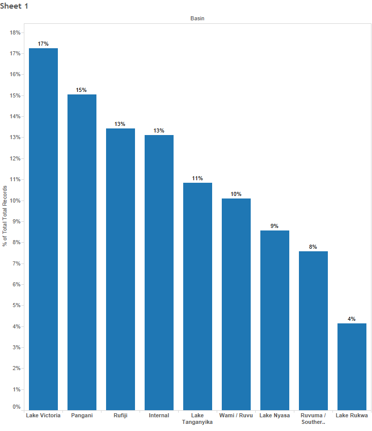

The primary data set we used to create our predictive model comes from DrivenData, a data science competition website. We believe that this data is highly reliable because it was collected by Taarifa--an open-source API for collecting crowdsourced data via cell phones--and the Tanzanian Ministry of Water. Tanzanian Ministry of Water is responsible for managing and implementing laws related to water and irrigation in the country, while Taarifa has been implementing the water-point management system there. We are confident in the data provided by both of these entities, since they are very involved in monitoring and implementing various processes for water services in Tanzania.
The data set from DrivenData is composed of two pieces: a training set (with the actual target variables listed) and a testing set (with the target variables removed). We used the training set for exploratory data analysis, and to both build and validate the model, while we used the testing data set to score our model and to submit our results to DrivenData, in order to understand the variability in classification rate between our validation and the testing data set. This will help us understand any potential variability in future data sets as the values for certain variables change over time.
Both the training and testing data sets were provided as .csv files. The training data set consists of 59,400 records, and includes 39 independent variables plus an ID variable and the target variable. The value of the target variable is one of three classifications: functional, functional-needs-repair, and non-functional. The ID variable is a unique integer that identifies each specific water-access point. The testing data set consists of 14,850 records and is similar in its structure to the training set (though it excludes the target variable).
We further examined the 39 variables in the training data set to determine if any would benefit from being imputed or transformed, or if there were opportunities to create new useful variables. During the modeling process, we split the training set into two random data sets: one to serve as model training and the second for validation. We are confident in a 70/30 split because the classification rates we obtained from the validation set were very similar to the results obtained from DrivenData for the testing data set.
We do not need real-time model results, or even at a daily or weekly frequency. We have determined that the model will likely be run quarterly, for two main reasons. First, since updated water-point observations come from the repair team, it will take a few months for enough new observations to come in to make re-fitting the model necessary. Second, quarterly model runs allow for better planning of the upcoming work for the next three months.
With that in mind, we have determined that we can sacrifice model performance (i.e., speed) for accuracy. In fact, given the cost and delays associated with inaccurate predictions, model interpretability is also a lesser consideration. Therefore, we considered so-called black box models such as random forests, neural networks, and gradient boosting.
Though out of scope for the current project, in the event this project expands beyond Tanzania in the future, we would need to revisit the model speed limitations, as the amount of data and frequency of model executions would certainly increase.
Over the course of this effort we utilized several tools in order to explore and model our data. These tools include Tableau, Weka, R, and SAS Eminer. In order to create the best model possible, algorithms such as XGBoost and Random Forests were attempted and finally an ensemble of the two.
The modeling team has attempted numerous combinations from the two primary modeling tools. SAS Eminer did produce fairly accurate results and can quickly execute a number of models on the water-point data, but the results lagged behind those from RStudio, and SAS Eminer can be cost prohibitive. For an organization such as MSPAwesome, which has tight budgets and is reliant on grants for much of its funding, RStudio and the R language are a better alternative because they are free, open-source tools with a robust and active community of developers. In RStudio, we primarily focused on two algorithms: the gradient boosting algorithm XGBoost, and randomForest. Both were solid performers. XGBoost predicted the non-functional and functional-needs-repair classes slightly better, but randomForest had a better overall accuracy.
In addition, we created ensemble models by combining the results of the RStudio models. First, the team attempted to perform model stacking. We tried several iterations of stacking, but the results failed to show an improvement in prediction.
Finally, the team averaged the predicted probabilities of each of the three response categories from the XGBoost and randomForest models, then selected the category from the maximum average probability. Using this strategy yielded a noticeable increase in prediction over any of the previously attempted models. Therefore, the team recommends using this blended model, averaging the predicted probabilities of RStudio’s XGBoost and randomForest models to achieve maximum accuracy.
While beyond the scope of the current project, future development should investigate simplifying the model and expanding data collection, so that the model’s usage can expand beyond Tanzania and into other areas of Africa (or around the world). This will require a coordinated effort across multiple agencies to standardize data formats and data-capture procedures. The project team would also have to re-evaluate any variables, such as region, that are specific to Tanzania. This is a longer term effort, but has potentially huge benefits for the population of the continent, particularly sub-Saharan Africa.